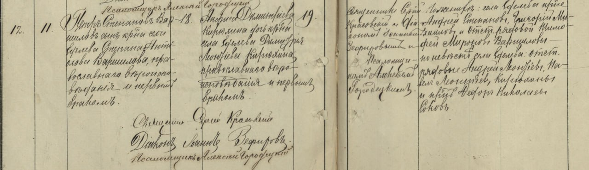
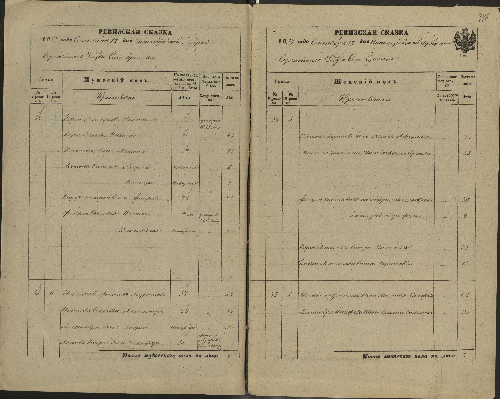

"В один из дней 2021 года я сидел у компьютера в предвкушении. Мне только что пришел ответ из Нижегородского архива на запрос о браке нашего прадеда Петра Ворошилова. В то время я только начинал "раскапывать" малоизвестные истории наших предков. Опыта работы с архивами почти не было и любой ответ от них воспринимался как маленькое чудо. В данном случае чудом был сам факт подтверждения брака прадедушки и прабабушки, ну и ожидаемый бонус в виде отчеств. Сюрпризов не ожидалось...".
Читаю справку и... чуть не падаю со стула. Брак Варшилова Петра Степановича и - КИРЮХИНОЙ Анфисы Дмитриевны.... Как - Кирюхиной?! Наша Анфиса была ПОЛЕЖАЕВА в девичестве! Так говорила ее дочь - наша бабушка, и вряд ли она ошиблась с фамилией. Может у Петра потом был еще один брак, но с Полежаевой? Другая Анфиса - эта версия как-то маловероятна... отец указан Кирюхин, и свидетели Кирюхины.... Как же Полежаева оказалась Кирюхиной?!

Так я впервые столкнулся с "уличными" фамилиями - явлением, хорошо известным опытным исследователям прошлого. Дело в том, что после наделения крестьян "официальными" фамилиями, которые предназначались для документов, иногда в ходу на долгое время оставались и фамилии "уличные", по сути просто прозвища, которыми звали членов той или иной семьи в повседневной жизни. И часто эти клички были настолько сильнее и живучее новых фамилий, что даже приходские дьячки ошибались, делая записи в метрических книгах - как в нашем случае. Получается, что семью звали в деревне Кирюхиными и это была настолько устойчивая кличка, что их долгое время так и писали в метрических книгах. И только постепенно уличная фамилия была вытеснена официальной. Но откуда же взялась столь устойчивая кличка “Кирюхины”? Изучая Ревизские сказки (аналог современной переписи) - например 10-ю от 1857 года по селу Еделеву, где жили Полежаевы, мы можем найти там семью Кирея Алексеева Полежаева. Кирей - это Кирилл, в просторечии - Кирюха. Так и слышится говорок деревенских сплетниц: "Это хто ж такая? Аааа, так она из Кирюхиных....." С одной стороны - звучит слегка пренебрежительно, но - и опасливо тоже…. Анфиса Дмитриевна Кирюхина - правнучка Кирея Алексеева, потомков которого поминали его именем еще полвека после его смерти. Видимо семья “Кирюхи” чем-то сильно запомнилась односельчанам….
Уже в 1910-е годы в метриках нет никаких Кирюхиных, те же персоны, но Полежаевы.Что ж, а фамилия Кирюхины так и исчезла? Так то так, да не совсем....

Например, в "Списке лиц имеющих право участвовать в избирательном собрании для избрания гласных в Симбирскую Городскую Думу" в 1913 году обнаруживается Кирюхин(Полежаев) Григорий Дмитриевич, живший на Лисиной улице и имевший недвижимое имущество оценочной стоимостью 12 252 рубля, что довольно немало по тем временам. Если бы не двойная фамилия, находимая поиском в интернете, мы бы долго не знали об этом брате Анфисы Дмитриевны. То, что он действительно был родом из Еделево, подтвердилось совсем недавно, когда он был найден в одной из приходских метрических книг. И на этом история с Кирюхиными не заканчивается. Полежаевых в Российской империи было огромное количество. Кирюхиных - тоже. А много ли Полежаевых-Кирюхиных? Как минимум одна семья носила именно такую двойную фамилию. Жили они в 1913-1917 году, согласно справочникам, в Петербурге, в доходном доме на ул. 3-й Рождественской (ныне - Советской), 6. Григорий Васильевич Полежаев-Кирюхин, глава семьи, вполне мог быть сыном Василия Федулова Полежаева(Кирюхина), потомком Кирея Алексеева из Еделева, и - троюродным дядей Анфисы. И это было бы совсем уж взятое с потолка предположение, если бы не один факт. Как нам известно, Анфиса Дмитриевна, уже овдовев, в 1920-х приехала с дочерьми Александрой и Ниной в Ленинград. Здесь, в 1928 году она скончалась от рака груди в Мечниковской больнице. Почему она уехала из Еделева именно в далекий Ленинград? Не в Москву, не в Нижний Новгород или Казань? Может быть, когда ей поставили страшный диагноз, она поехала за помощью в город, где у нее жил старший родственник? Эту загадку еще предстоит разгадать, но мне кажется фамилия Кирюхины еще встретится в наших поисках. И недавнее обновление этой истории. По мере изучения документов, стало подтверждаться предположение, что Кирюхиными членов семьи Кирея звали для того, чтобы отличать их от других, идущих от того же корня. в период 1800 - 1850 семей Полежаевых дворов/семей в Еделево было до 7 (в 1816 году например, а в 1827 - уже только 6, а в 1834 - уже 5) и нужно было как то отличать. Семья Кирея/Кирилы/Кирюхи для всей деревни были Кирюхины, но как уже отмечено, к моменту официальной записи в 1850 году было всего две семьи из корня Петра Ипатова. Другие семьи не дожили до этого времени, а потомки другой ветви не получили фамилию Полежаевы.